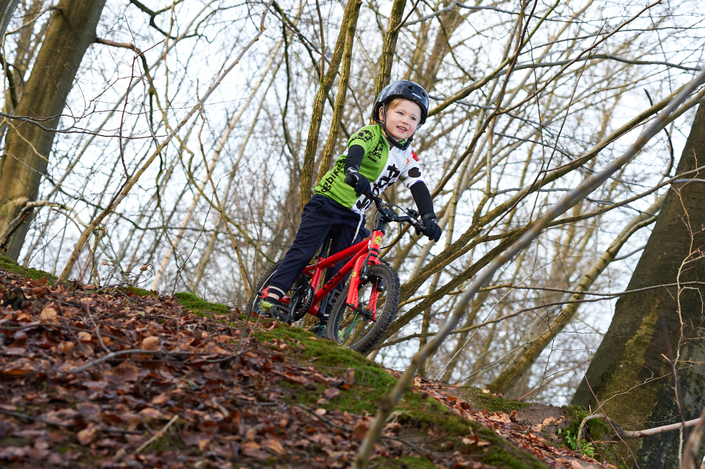

We’re proud to stock Frog Bikes, the best bikes for kids we've found. They’re lightweight and easy to handle, available in plenty of colours, and keep their value well for when kids grow out of them.
For years kids have been riding bikes that weigh half their own body weight and are tiring to lug around. On a practical level, heavy bikes usually end up being left in the shed! Frogs are made of aluminium, a lightweight frame material - meaning they’re easier for kids to balance and control, not to mention faster.
Buying a Frog Bike from Lunar
- We have free parking at the shop so it’s easy to take the bike home
- We offer free servicing on all Frog Bikes for a year (not including cleaning or replacing worn parts) - so it’s easy to keep your child riding all year round
- We stock lights and other accessories too like locks and kickstands
- All Frogs come with reflectors and a bell, mudgaurds and a spare set of off road tyres and tubes
Test rides
Frog have a wide range of bikes for children and we have one of each size of the balance, first pedal and hybrid bikes in stock for your child to test ride. We have a wide range of colours in stock and if the colour your child wants isn’t in stock, we can order them in within 48 hours!
We can also order in Frog’s road bikes and track bikes for more serious riders.
The bikes
Balance bikes
Balance bikes are perfect for young children of 2-3 years old. They don't have any pedals and the child's feet are always able to touch the floor. This gives the child an innate sense of the balance needed to ride once they're ready for pedals - no more traumatic moments taking off the stabilisers. They also have a steering limiter so that the handlebars can't be turned too far - this is much safer when learning to ride.
First pedal bikes
Suitable for children aged 4-5 years old. Like the balance bikes, they come with a steering limiter. They come with mudguards as standard, and with two types of tyre - a hybrid tyre for every day use, and a knobby tyre for muddy rides along the canal or in the countryside.
Hybrid bikes
For most riders, this is everything you need. Available from age 5 up to age 14, they're made of aluminium and have flat handlebars and 8 speed gears with an easy thumb shifter. And like the first pedal bikes they come with mudguards and two types of tyre.